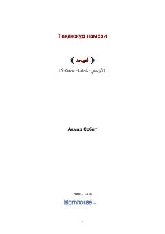

TNTahajjud namozining fazilatlari va uning ahamiyati haqidagi diniy risola.
Ushbu risola tahajjud namozining fazilati, uning shartlari va unga targ'ib qiluvchi oyat hamda hadislarni bayon qiladi. Muallif tunni iborat bilan o'tkazishning ahamiyati va solih zotlarning odatlari haqida ma'lumot beradi.